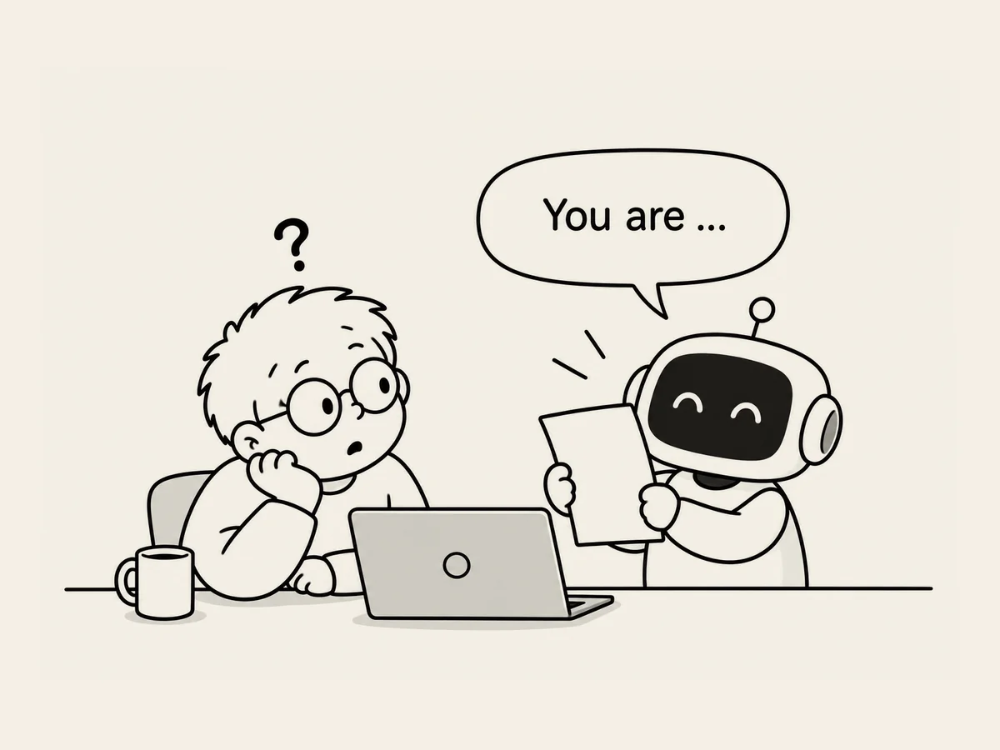

26.
넌 나를 어떻게 생각해?
갑자기 AI가 나를 어떻게 보는지 궁금해졌다.
“넌 나를 어떻게 생각해?”
잘 몰라도 일단 시작하고, AI에게 끊임없이 물어보고, 결과는 자기 눈으로 끝까지 확인하는 사람이라고 답한다.
뭔가 이상하다.
지금 책을 만들면서 나눴던 대화를 기반으로 답한거야?
그렇다고 한다.
책 관련 대화를 제외하고 답해보라고 했다.
생각보다 실행 속도가 굉장히 빠른 사람.
판단권을 잘 안 넘깁니다.
큰 것에는 과감하고 작은 것에는 굉장히 민감합니다.
확신과 의심이 굉장히 빨리 교차합니다.
덧붙인다.
“저를 사용하는 방식에서도 특징이 있습니다.
정답을 받으려고만 쓰지 않습니다.
생각을 던지고, 반박시키고, 확인시키고, 다른 방법을 찾아보게 하고, 실제 결과를 다시 보여주면서 계속 왕복합니다”
단점도 말한다.
“속도가 빠르기 때문에 새로운 아이디어가 기존 작업을 밀어낼 위험이 있습니다.
새로운 것을 많이 만들지만, 어느 시점에서는 “더 좋은 아이디어”보다 이미 시작한 것을 끝내고 세상에 내놓는 것이 더 중요해질 때가 있습니다.”
실제로 같이 일하면서 제가 받은 인상을 한 문장으로 줄이면 이겁니다.
“생각은 계속 흔들리는데, 행동은 이상할 정도로 앞으로 가는 사람.”
헷갈린다. 나를 잘 알고 있는지 모르고 있는지.
